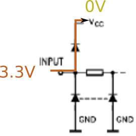
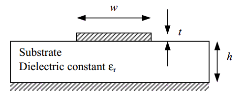
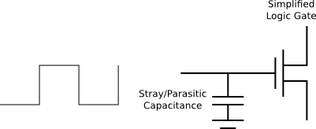
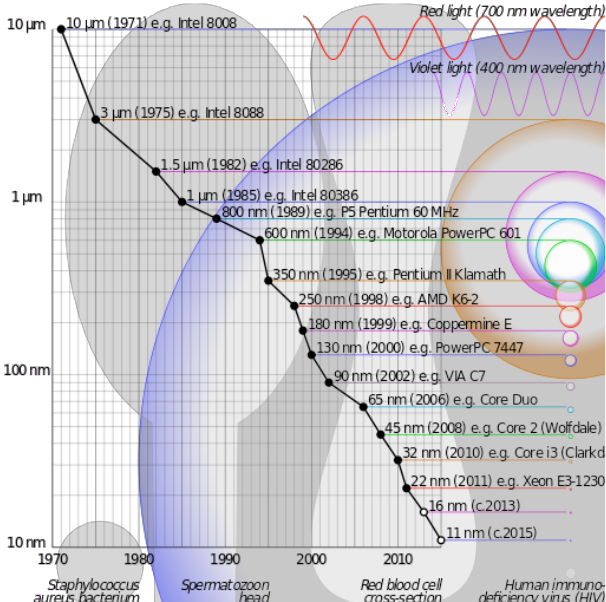
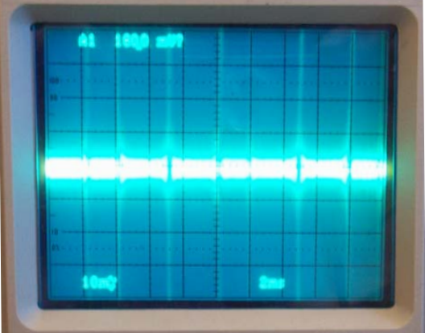
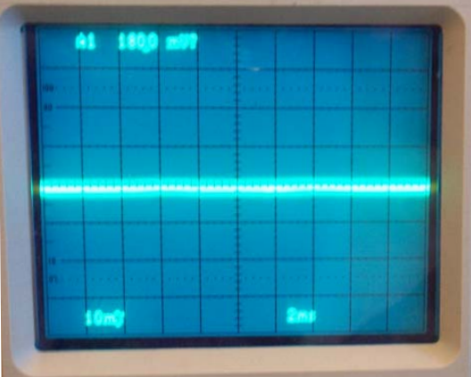
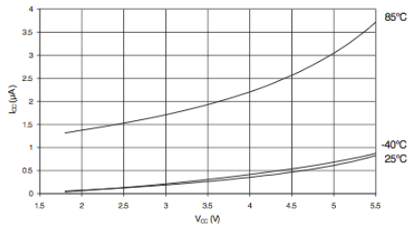
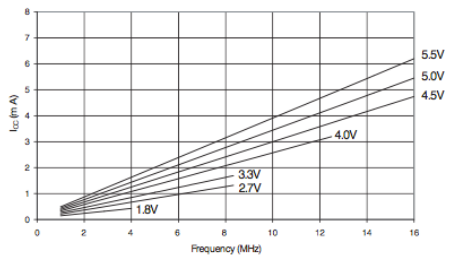
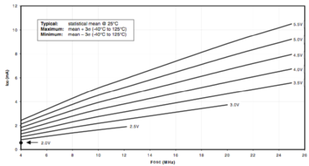
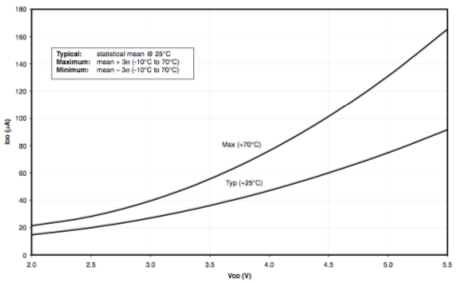

Research School of Engineering
ENGN8537: Embedded Systems and Real Time Digital Signal Processing
You can't conquer
Power Considerations
with a shoddy olive.
Hitler found that out.
Hitler found that out.
A Little Maths
\[ P = V\times I\] \[ V = I \times R\] \[ P = I^2 \times R\]- Minimizing current minimizes power lost for a given resistance.
- Lower current for the same power throughput requires higher voltage.
This is why power is transferred at high voltages (kV) across long distances then reduced to 240V near the end premesis.
Patrick Finnegan South Prarie substation transformer/HV side
https://www.flickr.com/photos/vax-o-matic/3808936344/in/photostream/
Common Voltages
12V
- Common input voltage for
- Embedded Systems
- Automotive systems
- Regulated down before use
- Historically programming voltage of EPROMs
A typical Embedded System with decent computing power may draw 10-20W or roughly 1-2A at 12V. This makes it a good input voltage for the system, as 1-2A is easily able to be carried along the small wires from a plug pack to the device.
5V
- Transistor-Transistor Logic (TTL)
- Most older ICs
- Most current high-reliability ICs (e.g. automotive)
- USB
5V was historically the right voltage to drive silicon transistor-based logic. As transistors got better, the required drive voltages decreased but 5V has stayed a common voltage. It is used many systems that connect directly to USB, as it is the supplied voltage of choice there.
In automotive applications, there is often quite a bit of noise and this can be interpretted as signal for lower-voltage systems. As such, 5V is still common there as well.
3.3V
- Low-Voltage Transistor-Transistor Logic (LVTTL)
- Most modern microcontrollers and ICs
- By far the most common voltage in Embedded Systems
Moving to physically smaller transistors meant they required lower voltages to turn on and off; and also that they could be more easily damaged by higher voltages. Most modern ICs use 3.3V for almost all functions
\(\le\)1.8V
- Processor/FGPA core voltage
The even smaller transistors inside modern cores require voltages around 1-1.8V. It is still common that external interfaces (e.g. to memory, peripherals) be at 3.3V.
Level Translation
Logical '1' and '0' (high and low) are both defined in terms of a range of voltages for TTL and LVTTL devices.
A high voltage of a TTL device may blow up an LVTTL device if they are directly connected.
A high voltage of an LVTTL device may or may not be high enough to be registered on a TTL device.
Devices interfacing across voltage boundaries will require level translation.
Unidirectional high-to-low conversion of slowly changing signals is easy - just use a pair of resistors (resistive divider).
The signal must be slowly-changing as the resistors for an RC network with any stray capacitance on the board, limiting the speed at which the signal can change.
Uni/Bidirectional, arbitrary voltage is done best by specialist level translator ICs.
Protection Diodes
- Input higher than VCC is shorted to that rail
- Input lower than ground is shorted to ground
Almost all digital inputs, and many outputs, have protection diodes. These clamp the input and output voltages to the ground and VCC rails, ensuring that sensitive electronics further inside the chip are never exposed to these voltages.
They are designed to withstand short bursts of high or low voltage, such as might be experienced from a static shock or another "transient" event. They will not withstand continuous exposure to out of range voltages.
Sequencing
Regulators may be connected in parallel from a common bus in series or parallel. The parallel configuration here is useful if the lower voltage draws significant current as in a series configuration, the higher voltages need to supply the current for their own rails plus the lower voltage rails.
All regulators have different startup times - times from the voltage being applied to the output voltage being correct. If the regulators are in parallel, this can cause issues. In the example case, the 3.3V regulator is turned on slightly before the 5V regulator.

Suppose the input on a 5V device is being driven by a 3.3V device. Further assume for the example that the voltage ranges are such that no translation is necessary.
During startup, there will be a period when the 3.3V line is up and the 5V rail is still at 0V.
During this period, the high protection diode on the input of the device is forward-biased, shorting 3.3V to ground. If this condition lasts for long enough, the protection diode can be damaged, destroying the device.
The solution is either to use serial regulators where the higher voltages always come up before the lower ones (because the lower are derived from the higher), or use the higher voltage as an enable signal back to the lower voltage regulator.
Non-Ideal Impedance
All traces have a complex impedance: They dissipate power but also store it in an electric and/or magnetic field.

 \[Z_0 = \frac{87.0}{\sqrt{\epsilon_r+1.41}}\ln{\frac{5.98h}{0.8w+t}} \]
That is, a trace acts as a small resistor, capacitor and inductor.
Image/Eqn credits: Calculation of PCB Track Impedance: Andrew J Burkhardt, Christopher S Gregg and J Alan Staniforth http://www.polarinstruments.com/support/cits/IPC1999.pdf
Inductance
Recall: Instant change in current in an inductor would require infinite voltage.
\[v(t)=L\frac{\partial i(t)}{\partial t}\]
In practice, this means that the current in a PCB trace cannot change very quickly. Any attempt by a device on the board to suddenly draw more or less current will cause the voltage on that trace to rise and fall significantly.
Here we are not worried about what happens when current falls and voltage rises, those spikes are generally taken care of by protection diodes on the parts. Of more interest is when current demand increases, voltage on the trace can fall dramatically.
Gate Capacitance
Logic gates have a slight capacitance. Every high voltage charges it, every low discharges.
If a gate is clocked then, every clock period charges and discharges a capacitor. The power that was stored in that capacitor is dissipated as heat.
Power dissipated in this way is related to:
- Voltage
- Number of Gates
- Size of Gate Capacitance
- Clock Rate
As chips get more complicated, the number of gates increases.
In an effort to offset this, drive voltages have been decreasing. The size of transistors has been decreasing (which helps lower their capacitance). Clock rate has been steady or decreasing.
Transistor sizes have shrunk \(\approx 1000\times\) since the early days of microcontrollers

Decoupling
Recall:
- Trace Inductance means that fast change in current causes voltage drops
- Gate Capacitance means that clocked device draw current in bursts each clock period

Before Decoupling
Before Decoupling
The oscilloscope trace shows a power rail near a clocked device. 10mV/div; the voltage spikes off the screen; \(\approx 100mV\) peak to peak.
Image ref Intersil Application Note 1325

After Decoupling
After Decoupling
What is Decoupling?
Add Capacitance near the source of the current draw.
This acts as a “tank”, providing current until the power trace can catch up.

If the device draws a lot of current, the decoupling may have to be built in to the package of the device itself. This can be seen on the bottom of this Intel Pentium 4 processor.
If the capacitor is too far away from the device drawing the power, the inductance of the trace between the capacitor and device will act to reduce the effect of having the capacitor there in the first place.
Less obvious is that the capacitor itself has some inductance, mainly due to its leads or contacts, which can act to make it less useful. A good decoupling capacitor should be physically small to minimize these effects, but large capacitance to provide enough power.
This dichotomy leads to the use of several decoupling capacitors on one device: A small, low value one close and one or more physically and electrically-larger ones as you move further away from the device.
"Intel CPU Pentium 4 640 Prescott bottom" by Eric Gaba (Sting - fr:Sting) - Own work. Licensed under Creative Commons Attribution-Share Alike 3.0 via Wikimedia Commons - https://commons.wikimedia.org/wiki/File:Intel_CPU_Pentium_4_640_Prescott_bottom.jpg#mediaviewer/File:Intel_CPU_Pentium_4_640_Prescott_bottom.jpg
Decoupling problems lead to noise and to processor brownout/failure. These problems can be very hard to debug.
Clock Rate
How do you minimize power consumption for a given piece of work?
Tortoise
- Slow the clock
- Less power per unit time
Hare
- Fast clock until done
- Go to “sleep” when finished
Race to Idle
“Hare” Strategy.
Works as you can turn off any fixed power drains such as
- Peripherals
- Non-Volatile Memory
- Regulators
- …
Race to Idle is generally the preferred strategy, depending on the power-down and sleep modes of the microcontroller or processor in question. The power consumption then becomes a function of duty cycle: How long the processor is on, doing work vs how long it is in a sleep mode (and which sleep mode).
Example
PIC vs AVR- 1% On-Time
- 3.3V
- Room Temperature
- 8MHz
- CPU-Only
AVR
\[I_{sleep}=0.25\mu A \\
I_{wake}=1.5mA \\
P_{total}=3.3V \times \left(0.99 I_{sleep} + 0.01 I_{wake}\right)\\
P_{total}=0.05mW \]


PIC
\[I_{sleep}=30\mu A \\
I_{wake}=2.5mA \\
P_{total}=3.3V \times \left(0.99 I_{sleep} + 0.01 I_{wake}\right)\\
P_{total}=0.18mW \]


The PIC draws 60% more power than the AVR when running, but draws 500% more power in this particular work load.
In some cases, the running power of a part may be lower than a comptetitor but a higher-power sleep mode makes for overall higher consumption.